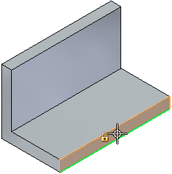
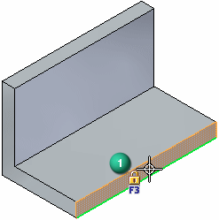
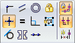
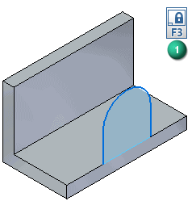

Draw a synchronous sketch
-
(Optional) Display the drawing grid.
-
On the ribbon, in the Sketching tab→Relate group or on the Home tab, verify that the following are selected:
-
Maintain Relationships command
 , to apply IntelliSketch relations automatically as you draw.
, to apply IntelliSketch relations automatically as you draw. -
Relationship Handles command
 , to display the relationship handles on the geometry.
, to display the relationship handles on the geometry. 
-
-
Choose a 2D drawing command, such as the Sketching tab→Draw group→Line command.
-
Select and lock a specific sketch plane by doing the following:
-
Choose where you want to sketch:
-
To start a sketch in a new file, highlight one of the three base coordinate system planes in the center of the graphics window.

-
To sketch on an existing model, highlight the model face or edge.

-
-
The X-axis of the new sketch is indicated by the green line along the edge of the highlighted plane or model face.
(Optional) Before you lock the sketch plane, you can change the X-axis orientation by pressing the N (Next), B (Back), or P (Base Plane) keys.
Note:The X-axis orientation controls the dimension text alignment for dimensions, and it determines the horizontal and vertical axes for horizontal and vertical relationships. (1) (2)


-
Press F3 or click the lock button (1).
Note:
The sketch plane will remain locked until you unlock it.
-
-
Orient the view to the selected sketch plane by selecting the Sketch View command .
Tip:When you are finished sketching, you can press Ctrl+I to return to the default isometric view.
-
Follow the command prompts displayed in PromptBar to draw the 2D element you selected.
When you are finished drawing the first element, right-click to end the command and select the next 2D drawing command.
Tip:-
To ensure two 2D elements are connected, verify the end point relationship
 is displayed before you click.
is displayed before you click. -
Also look for either of these connect symbols on the completed sketch:

 .
. -
As you draw, connected lines form a shaded region. You will use the region to construct a synchronous feature.
Note:In synchronous modeling, sketches are generated and managed automatically for you. Observe:
-
A sketch is created as you draw. It is listed in PathFinder in the Sketches collection.
-
All connected lines are placed on the same sketch plane.
-
All geometry added to the same sketch plane or planar face combines into one sketch. Similarly, geometry drawn on two faces generates two sketches.
-
-
Add geometric relationships as needed to control the shape of the sketch. Select the desired relationship type from the Relationships group and click the elements to relate as prompted.

-
Add dimensions as needed to control the size and position of the sketch elements.
-
(Add dimensions to selected elements) Choose a dimension command, such as Smart Dimension, from the Sketching tab or Home tab.
-
(Automatically add dimensions as you draw) Open IntelliSketch, and on the Auto-Dimension page of the IntelliSketch dialog box, set the Automatically Create Dimensions For New Geometry option.
Tip:It is good practice to place dimensions and geometric relationships relative to the primary axes of the coordinate system. This can be especially useful for symmetric parts during later design modifications.
-
-
To draw on a different face or plane, do all of the following:
-
Unlock the current sketch plane by pressing F3 or clicking the lock symbol in the graphics window (1).
Example:
The lock symbol is removed from the graphics window.
-
Choose a drawing command.
-
Repeat step 4.
If you start drawing on a different face, a new sketch is created and added to PathFinder.
-
-
You can generate a solid model from a sketch region at any time using the Select command. To learn how, see Construct an extrusion: base feature.
If regions get in the way as you sketch, you can use the Disable Regions command to temporarily turn them off. See Enable or disable sketch regions for a sketch.
-
If you want to draw connected elements on different planes, as you would to sketch a piping route, use the 3D drawing commands, such as the 3D Sketching tab→3D Draw group→3D Line command.
How do I
Try drawing this simple sketchDraw an ordered sketch of a part
Draw an assembly layout